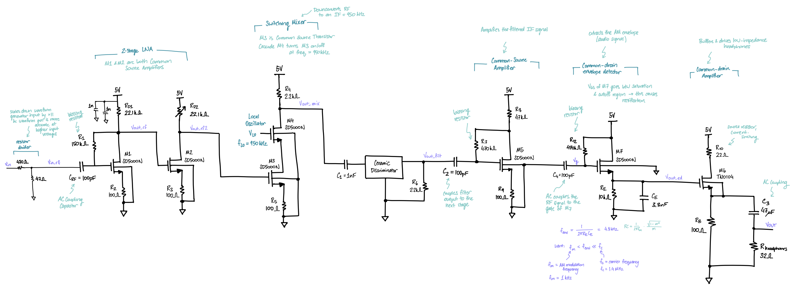
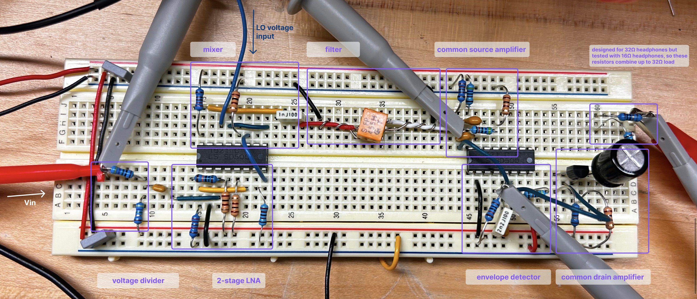
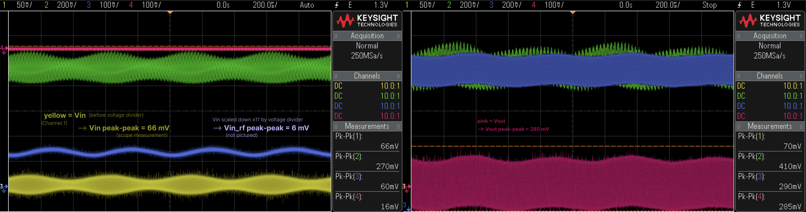
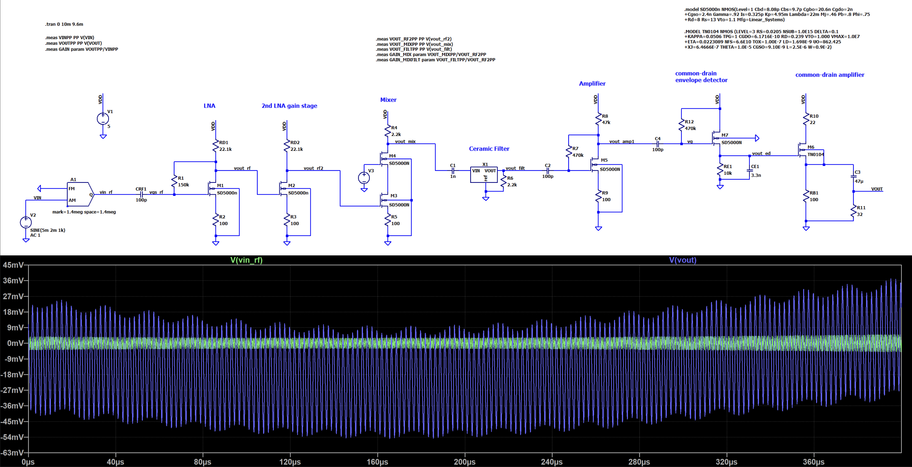

Heterodyne AM Radio Receiver - ENGS 61
I designed, simulated, and built a transistor-level radio receiver circuit to demodulate and amplify an AM radio wave into a pair of headphones. I completed this project in 2 weeks as part of the course ENGS 61: Intermediate Electrical Circuits. The measured results differed from the expected results – as expected, since I was testing a medium frequency circuit using a breadboarded implementation (per project instructions).
the design should be able to drive the demodulated signal at an ‘audible’ power level into a pair of 32 ohm headphones
Schematic of Final Circuit

Annotated photo of breadboard

Measured output of breadboarded circuit

gain of breadboarded circuit = 285 mV / 6 mV = 47.5 V/V
Comparison of LTSpice sim to measurement
reciever input: 1.4 MHz carrier with 1 kHz audio tone at modulation depth = 40%

Overall voltage gain of the circuit LTSpice: 46.03 V/V Measured: 47.5 V/V